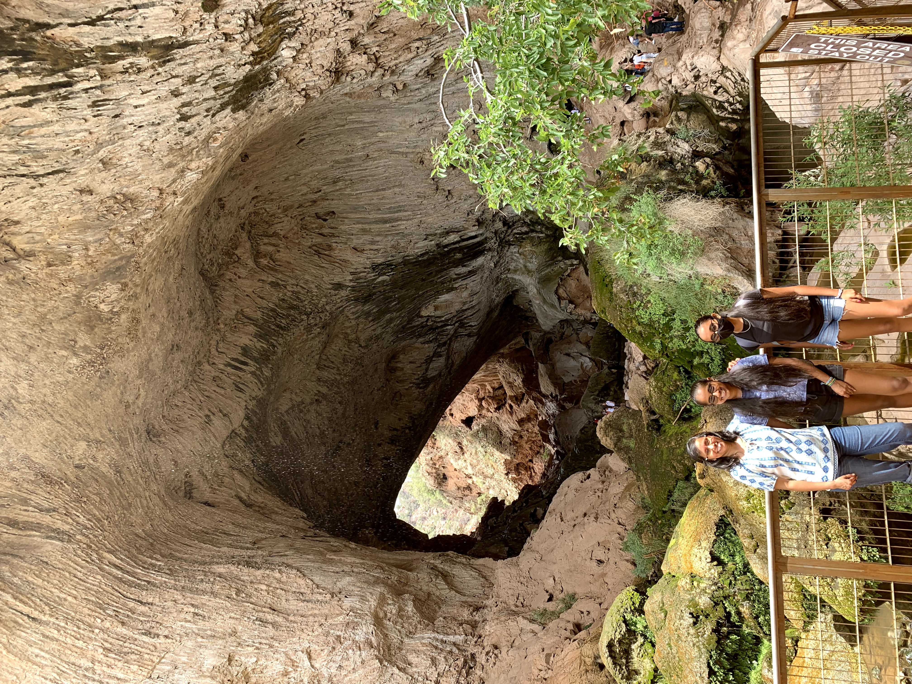
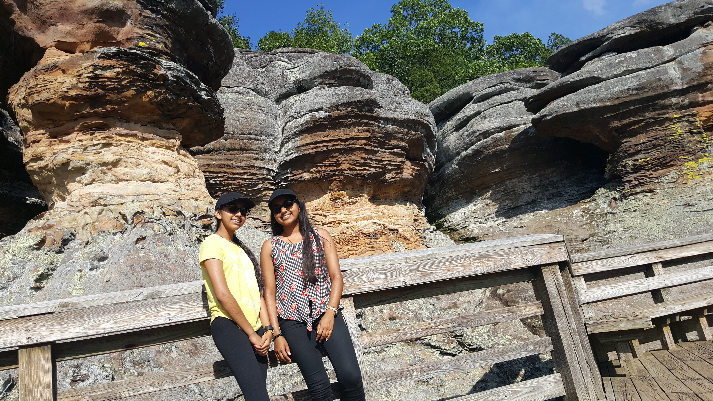
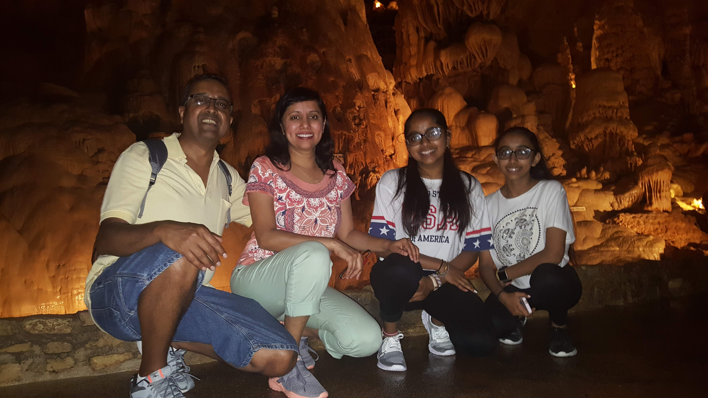

One of my many hobbies is traveling, I love seeing and experiencing new things especially when I get to do it with my family. My parents are originally from India so when we go there often we always make sure to go on amazing family trips. And in the US I've been to many states going on road trips with my family. I've also been to Canada, Switzerland and a short layover in China too! Here I'll be sharing some easy but super fun destinations, what I did, what I enjoyed about them and some tips!
check out some of my favorite simple spots!

Natural Bridge
My family and I went to this place after being bored in quarantine for a while, we woke up around 5am and my mom prepared a picnic for us. We wanted to get there early before it got too hot, remember be safe when hiking in AZ summers. But we got lucky that day becuase the temperature capped out at 80 degrees. First we went down this little trail that led us to the small waterfall shown in the video, this didn't take us that long but we were already hungry, so we had a nice picnic and then went to explore a bit more. When we went there we didn't realize that the trail circled around. So at first we went 2/3 of the way though turned around and then found the rest of the 1/3 the opposite way! If you plan to come here be sure to wear good sneakers (not white ones like me!), plan for the heat if you go in summer and make sure to do the trail as a loop!

Camel Rock
My family and I went to Camel Rock on a road trip from NY to Texas. It's located in Illinois and while it may not be the most obvious it get's it's name from the shape of the rock formation that can be seen in the video. I'd say it's quite similar to the camel rock in AZ but the camel here is a bit more prominent. The hike here was fairly steep but very well paved and not too lengthy so I would consider it an easy trail. The path on the way there is lined with lots of trees so there is lots of shade, so even in the middle of a summer day a hike here is not bad at all! If you plan to come here make sure to remember you're way in, because we got lost on the road and there was no signal for a bit.
